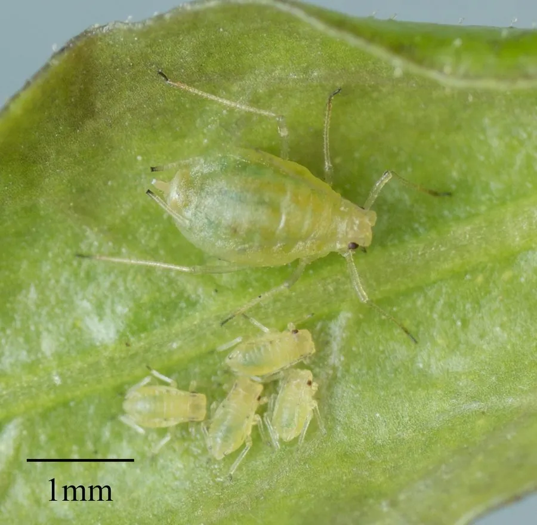

昆虫 · 动物界
桃蚜 Myzus persicae

全球广布的农业害虫，体色绿、黄或粉色，繁殖极快，能传播上百种植物病毒，是蚜虫中的“超级害虫”。
- 分类
- 门节肢动物门纲昆虫纲目半翅目科蚜科属瘤蚜属
- 栖息环境
- 桃树、蔬菜、烟草和观赏植物上，群集于嫩叶和嫩梢
- 地理分布
- 全球广泛分布，中国各地均有
- 保护级别
- 暂无评估
物种志
桃蚜成虫体长 1.5–3 mm，体色绿色、黄色或粉红色，分有翅型和无翅型两种形态，腹管明显。有翅型用于迁飞扩散，无翅型则在寄主上大量繁殖。
桃蚜全球分布，寄主植物超过 400 种，包括桃、烟草、蔬菜和观赏植物。它用刺吸式口器吸食植物汁液，繁殖力极强，春夏多进行孤雌胎生，几天就能繁殖一代。桃蚜还是多种植物病毒的传播媒介，传播病毒造成的危害往往比直接吸食更大，是农业上重点防治的害虫之一。防治上可利用瓢虫、草蛉、蚜茧蜂等天敌进行生物防治，也可使用黄板诱杀。目前它没有IUCN 的正式评估，中国未将其列入国家重点保护野生动物名录。
形态与习性
- 食性刺吸植物嫩叶和嫩梢的汁液
- 体长1.5–3 mm
- 繁殖春夏多进行孤雌胎生，几天繁殖一代
- 寄主超过 400 种植物，包括桃、烟草和蔬菜
- 病毒传播可传播上百种植物病毒
- 防治利用瓢虫、草蛉等天敌，或用黄板诱杀
趣味知识
- 桃蚜在温暖条件下几天就能繁殖一代，数量增长极快。
- 它可以传播上百种植物病毒，危害往往比直接吸食更大。
- 同一片叶子上可能有粉、绿、黄等多种体色的桃蚜个体。